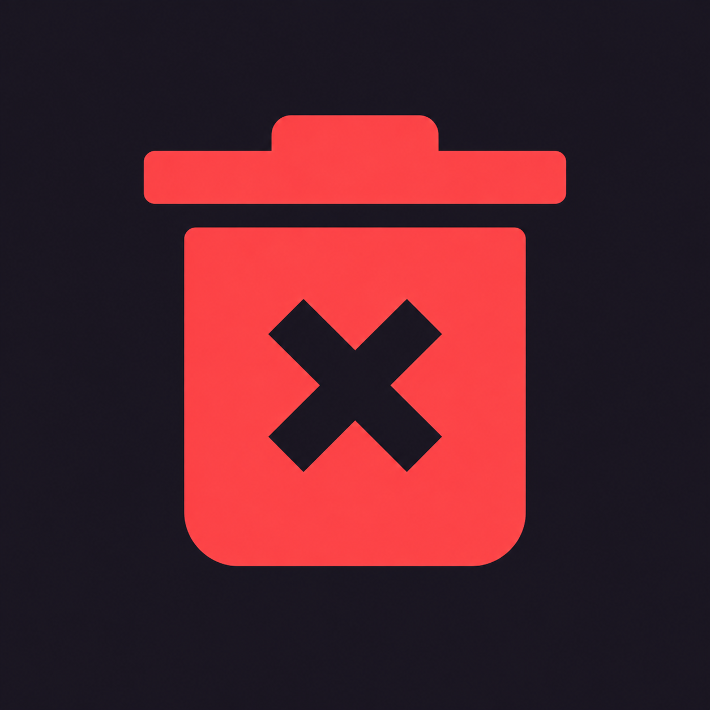

How to Use Call Screening Agent
A complete operational guide for managing screening features, whitelists, activity logs, and scheduled summary reports.
🔒 Your Data Stays On Your Device
Call Screening Agent runs entirely locally using Android's native CallScreeningService and local Room database storage. No phone numbers, contacts, or call logs are ever sent over the internet or transmitted to external servers. Your privacy is 100% guaranteed.
1. App Overview & How It Works
Call Screening Agent intercepts incoming phone calls before your device rings. It evaluates whether the caller is a known contact or on your Whitelist. If unknown or unlisted, it silently blocks or mutes the call and records the entry in your local screened log.
2. Main Dashboard Screen & Status Header
When you launch the app, the main dashboard provides an immediate view of your system screening state:
- Status Indicator: Displays whether screening is currently Active & Guarding, or Disabled.
- Permission Banner: If required role permissions (such as
ROLE_CALL_SCREENING or Notifications) are revoked, a prompt will appear asking you to re-grant them so screening can resume.
3. Action Button Icons Explained
The screened call log and whitelist entries feature action button icons to manage your logs cleanly:
Delete Icon
Located next to each whitelist item. Tapping this removes the selected phone number or clears the record from your local database.
Add to Contacts Icon
Tapping this button next to a Whitelisted number immediately prompts Android to create a new entry in your phone's address book for that blocked number.

Clear Screened Calls Log
Located next to the Screened Call Log header, this button will permanently delete the log of screened calls in the list from your device. Since this list is only stored on your device, there will be no record left anywhere of these screened calls!
Add to Whitelist Icon
Tapping this button next to a screened number immediately adds it to the Whitelist. Calls from this number will be immediately accepted. The number will remain on the Whitelist for seven days.
4. Whitelist Section
Whitelisted phone numbers bypass call screening and are permitted to ring through:
- Manual Whitelist Entry: To manually add a phone number to the Whitelist, enter the number in the field and press the "+" button. The number will be whitelisted for seven days. If you would like to keep the number longer than seven days, you must re-enter the number. Long-pressing the number will copy the number to the system clipboard, and you can paste it back into the entry field and press "+" to re-add the number to the Whitelist.
- System Text Selection: Highlight any phone number in another app (like Chrome or Messages), tap the context menu, and choose Add to Whitelist.
- Expiration Rule: Whitelisted numbers remain active for 7 days before automatically expiring, preventing temporary numbers from permanently cluttering your permissions.
- Long Press:
A long press on any number in the Whitelist copies it to the system clipboard.
5. Screened Call Log Section
The main screen lists every blocked incoming call with full local history:
- Log Entries: Displays the phone number on the main line and the exact timestamp on the subtitle line (e.g., Blocked • Nov 4, 2:15 PM).
- Clear List Button: Located at the top right of the card, allowing you to wipe your entire screened call log in one tap.
Why do many screened calls show "Caller ID not provided"?
Automated telemarketers and spammers frequently mask or withhold their incoming number headers when dialing out. When an incoming call arrives without valid carrier-transmitted caller ID data, Android processes the call without a displayable phone number, resulting in the "Caller ID not provided" label in your log.
6. Settings Page
Access the Settings menu via the gear icon in the top app bar to adjust app behaviors and scheduled notifications:
Disable Screening Options
- 24 Hours: Pauses call screening for exactly 24 hours. Screening automatically reactivates after the timer expires.
- Until Re-enabled: Permanently disables call screening until manually switched back on via the main dashboard.
Daily & Weekly Report Notifications
Call Screening Agent can send automatic notification summaries to keep you informed of recent call filtering activity without needing to open the app manually:
- Daily Report Switch: Toggle to enable or disable a daily summary notification scheduled every 24 hours. You control what time of day the notification is sent.
- Weekly Report Switch: Toggle to enable or disable a comprehensive weekly summary report scheduled every 7 days. You control what day and time of day the notification is sent.
Note on Report Notifications: Scheduled daily and weekly report notifications are smart alerts. Notifications will only trigger if there were actual blocked calls recorded during that respective timeframe. If no calls were screened during the period, no unnecessary notification will interrupt you.
Help & Documentation
- How to Use Call Screening Agent: Launches this web page guide at any time.